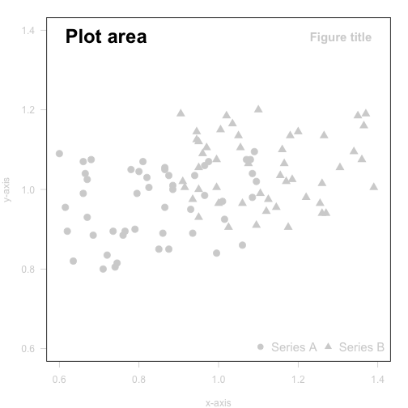
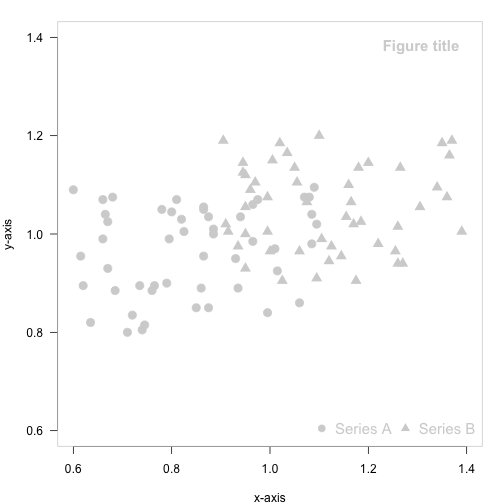
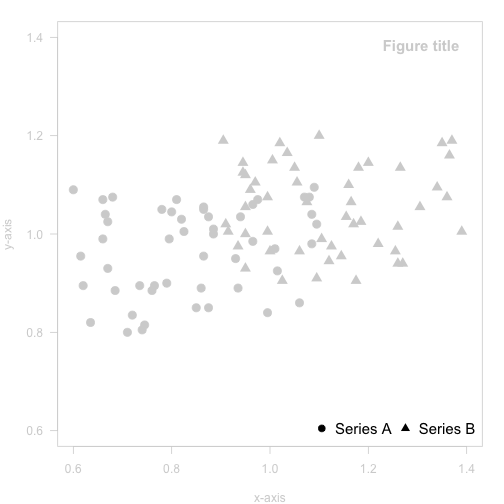
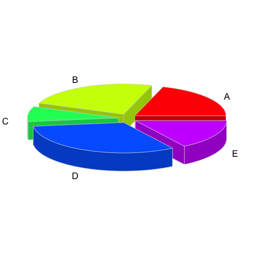
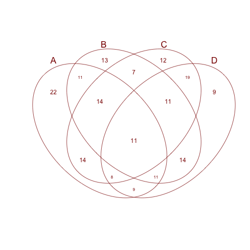
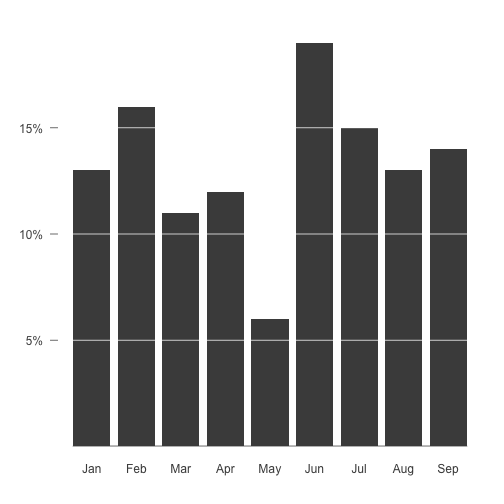
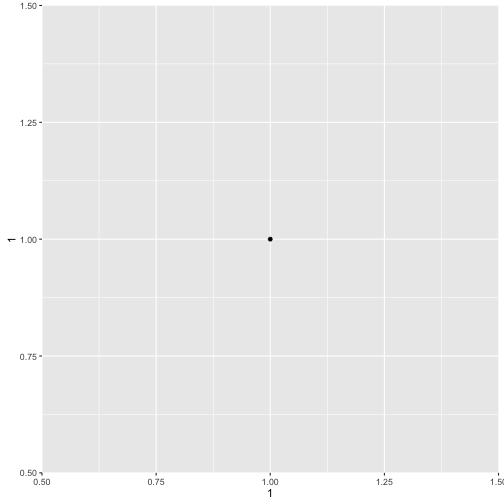
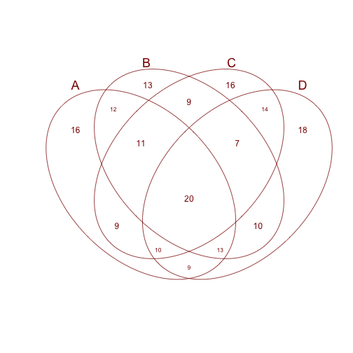
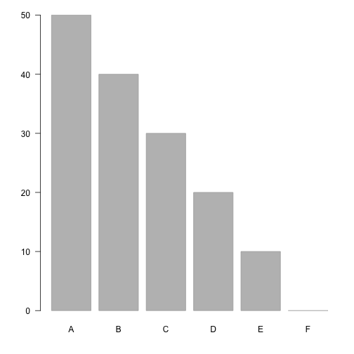

Outline
- Introduction
- graphics basis
- Composition and multi-panel plotting
- Graphics automation and exporting
- Resources
- Exercises
Kévin Cazelles and Nicolas Casajus
Université du Québec à Rimouski
A picture is worth a thousand words

 Murrell, P. (2015). The gridGraphics Package. The R Jounal.
Murrell, P. (2015). The gridGraphics Package. The R Jounal.
plot()boxplot(), barplot(), hist(), lines(), points(), legend(), etc.plot(x = 1, y = 1)

grid packagelibrary(lattice)
xyplot(1 ~ 1)

grid packagelibrary(ggplot2)
qplot(x = 1, y = 1)

graphics package
graphics packageboxplot2)
graphics packageThe function/object par()
## Creation of a numerical vector
x <- seq(50, 0, by = -10)
names(x) <- LETTERS[1:length(x)]
## Plotting the barchart
barplot(height = x,
names.arg = names(x),
col = 'gray',
border = 'darkgray',
las = 1)
plot(x = 1, y = 1)

plot(x = 1, y = 1,
bty = 'n')
plot(x = 1, y = 1,
bty = 'n',
ann = FALSE)
plot(x = 1, y = 1,
bty = 'n',
ann = FALSE,
xaxt = 'n')

plot(x = 1, y = 1,
bty = 'n',
ann = FALSE,
xaxt = 'n',
yaxt = 'n')

axes=FALSE is the same as bty='n'+xaxt='n'+yaxt='n'plot(x = 1, y = 1,
ann = FALSE,
axes = FALSE)

plot(x = 1, y = 1,
ann = FALSE,
axes = FALSE,
type = 'n')
points() or axis()
points(), lines(), rect(), polygon(), axis() and box()title(), text(), mtext()showtext packagelayout()split.screenpdf(), png(), jpeg(), bmp(), tiff()